כפתורים
- גובה 48 · מגע 44+ · רדיוס pill · Heebo 700 · 16px
- ראשי אחד לכל מסך; צהוב לעולם אינו כפתור
- hover = הרמה 2px + העמקת צל · לחיצה = scale 0.97 · פוקוס = טבעת 3px
Case Study Artifact · 2026–2027
שפת מוצר חמה וסקיילבילית לסיפורי חוסן אישיים בעברית — מערכת אחת שמחברת סטוריטלינג מותאם־אישית, איור ילדים, אמון הורי ועיצוב RTL מהיסוד.
שישה עקרונות שכל החלטה במערכת נמדדת מולם.
הממשק הוא הכריכה — הספר הוא הלב. היררכיה, צבע ותנועה מפנים את הבמה לאיור ולטקסט הסיפורי.
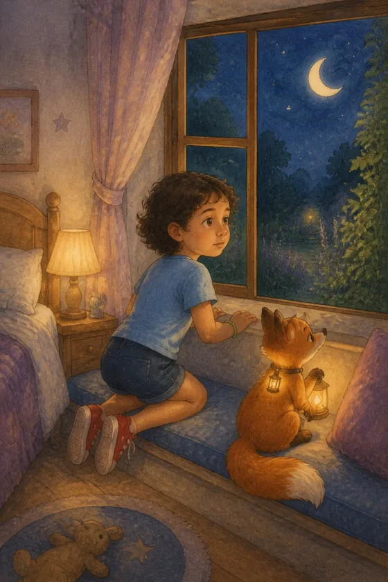
השם של הילד מופיע כבר בשלבי היצירה — בכותרות, בהסברים ובסיכום. ההורה רואה את הספר נהיה שלו.
חום נבנה מקרם, נייר ואיור — לא מבלונים ופונטים מקפצים. ההורה קונה, הילד מקבל.
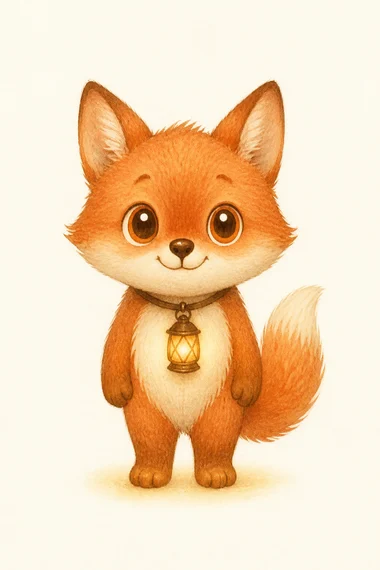
שלב אחד בכל מסך, התקדמות גלויה, שגיאות שמדברות בגובה העיניים. אף רגע של "מה עכשיו?".
לא שכבת תרגום על מוצר לועזי: מאפיינים לוגיים, מספרים שנשארים יציבים, וכיווני תנועה שקוראים עברית.
אין מוח זוהר ואין רשת נוירונים. האינטליגנציה מופיעה כשמשהו על המסך משתנה בעקבות בחירה של ההורה.
הערכים כאן נטענים מקובץ הטוקנים של המוצר עצמו — לא לוח צבעים נפרד לפורטפוליו.
תצוגה: Rubik (משתנה, 800–900) · גוף: Heebo. שתי המשפחות עם עברית מלאה — אין נפילה שקטה לפונט אחר, והספרות במחירים חדות.
גיבורים קטנים
ספר שילדים גדלים איתו
איך זה עובד?
הרפתקה אישית — 24 עמודים
טקסט מוביל מתחת לכותרות. שורה נעימה לקריאה בעברית, אף פעם לא רחבה מדי.
איך קוראים לו?
₪59 · ₪79 · ₪99
סיפור עם AI ולב גדול — SmallHeroes
text-align:start, margin-inline — אף פעם left/right קשיחיםעומק שמור לדברים שמרחפים באמת: כרטיסים, בר תחתון, בחירה. שאר הממשק שטוח ושקט.
נבנו מחדש כאן עם אותם ערכי טוקנים — כל מצב לחיץ וחי, לא צילומי מסך.
aria-invalid + role=alert — אף פעם לא צבע בלבדההבחנה החשובה ביותר במסך הכסף: תג צהוב אומר "אנחנו ממליצים", טבעת + ✓ אומרים "בחרת".
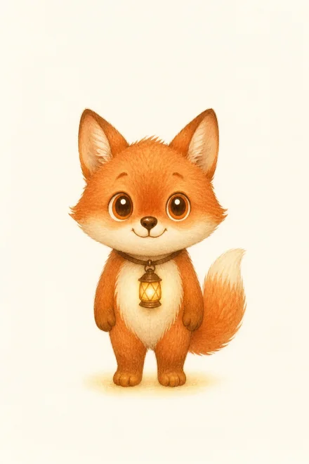
פחדים בלילה עם השועל אוּרי סיפור שעוזר להכיר את הלילה במקום לפחד ממנו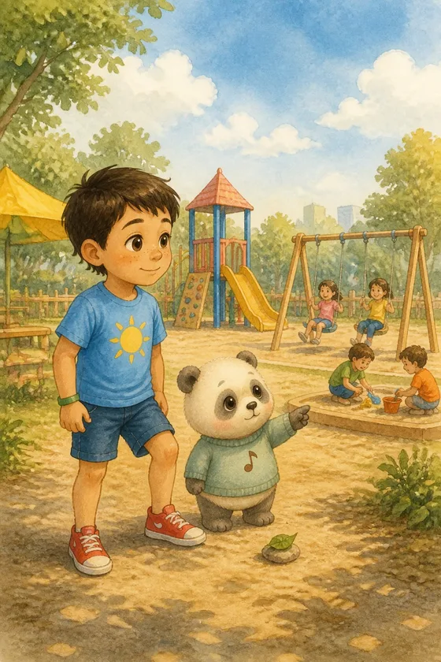
✓ ריאליסטי מאויירבאיזה סגנון נאייר?
מי יקריא את הסיפור?
שלד הוויזרד: התקדמות למעלה, תוכן באמצע, פעולות בבר קבוע — מעבר שלב 400ms.
ארבעה משכים, שלוש עקומות, חוק אחד: תנועה מסבירה טרנספורמציה — או שאינה קיימת.
prefers-reduced-motion מאפס את כל משכי הטוקנים גלובלית + כיבויים מפורשים — וגם המתג שלמעלה עושה זאת ידניתכך המערכת מבטאת אינטליגנציה — בלי מוח זוהר: ההורה מספר, והמסך משתנה. המחשה אינטראקטיבית המבוססת על התנהגות המוצר בפועל (שם ← כותרת, אתגר ← דמות, כיוון ← ספר).
אותו מסך כסף בשלושה עולמות — לא הקטנה, אלא ארגון מחדש.
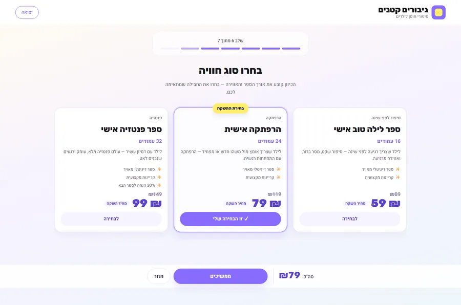
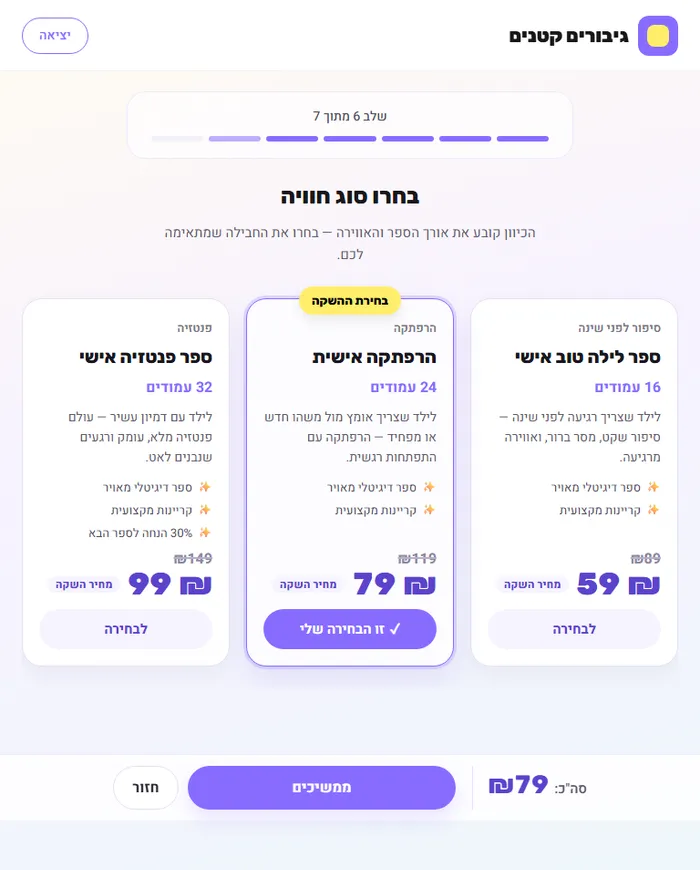
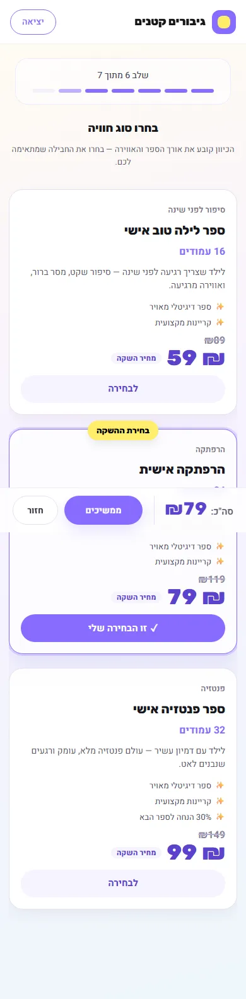
עברית היא לא "מצב" של המוצר — היא המוצר. הנגישות נבנתה לתוך הטוקנים.
inline-start, לא left:focus-visible (נסו Tab בעמוד הזה)aria-invalid + role=alert, לא צבע בלבדמהסקרנות הראשונה ועד ספר עם שם — כל מסך צילום אמיתי מהמוצר (נתוני דמו). הקשר בין ההחלטות: אתגר ← דמות ← פרטי הילד ← סגנון ← קול ← חבילה ← ספר.
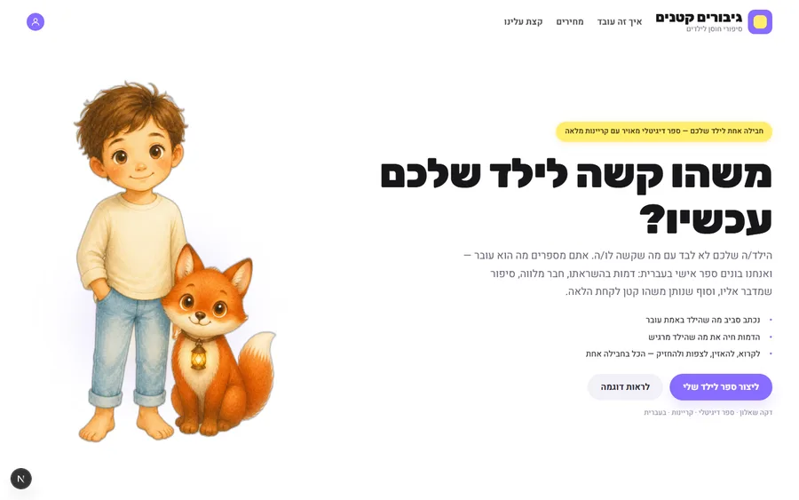
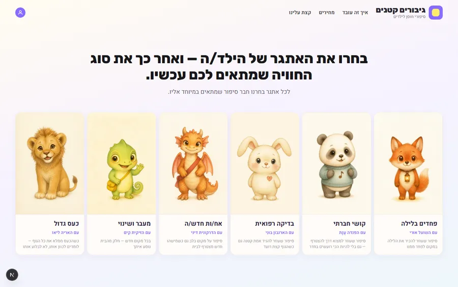
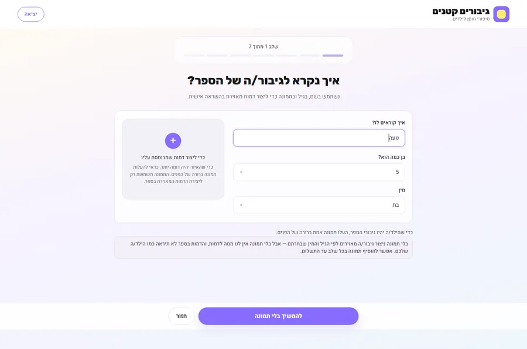
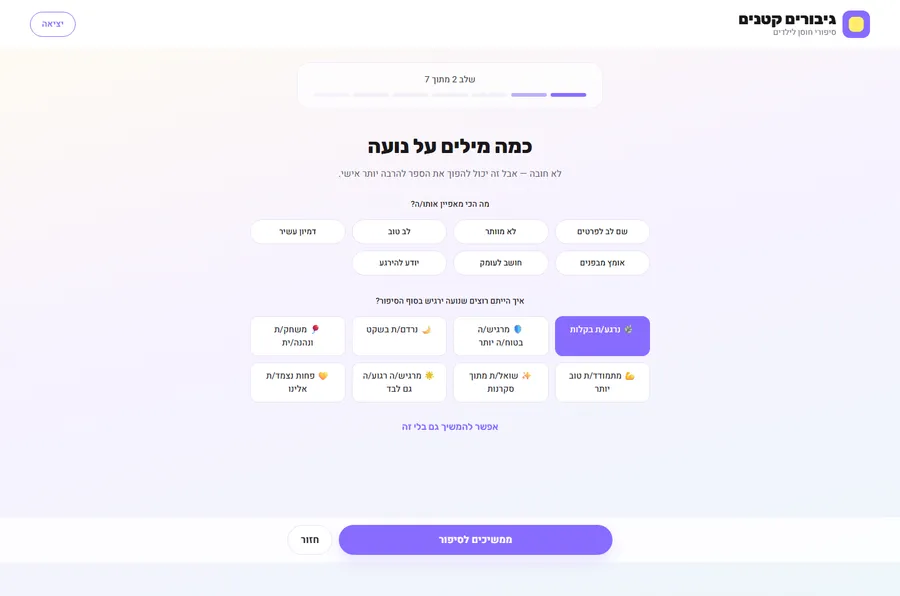
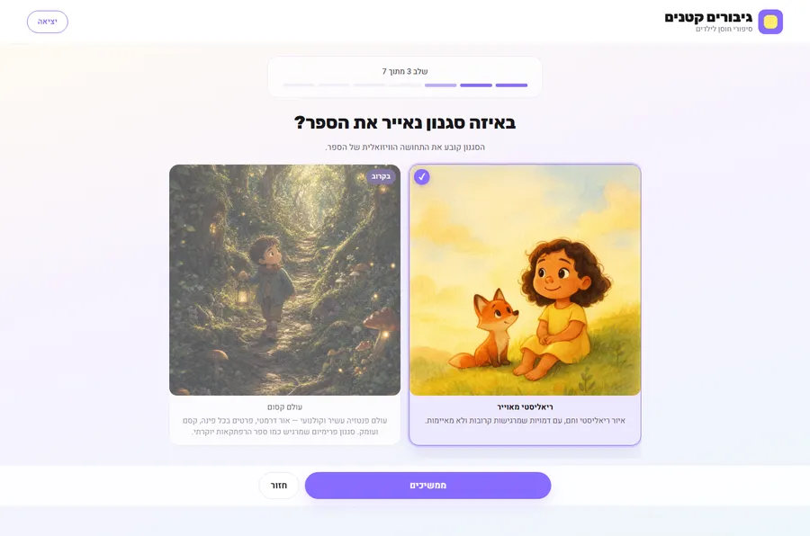
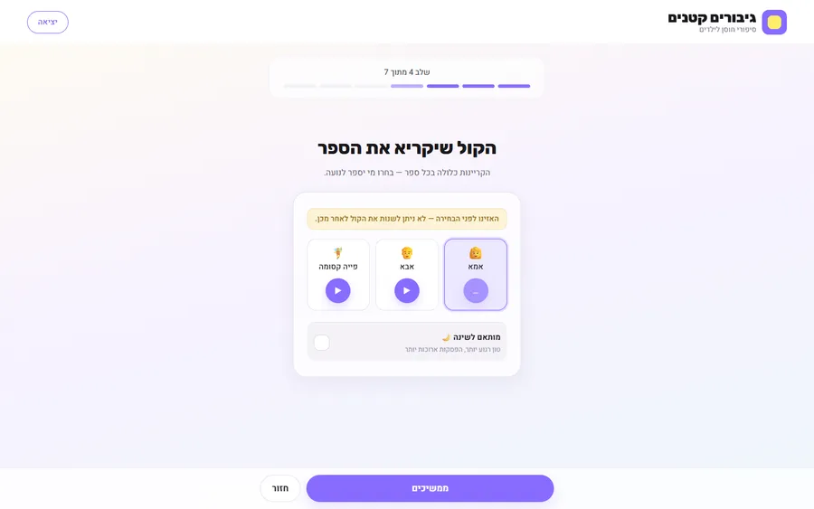
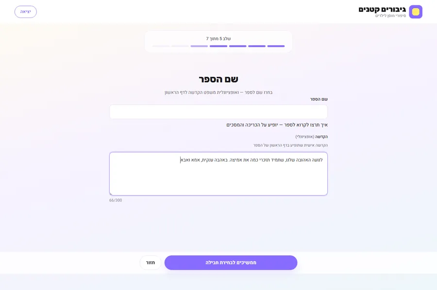
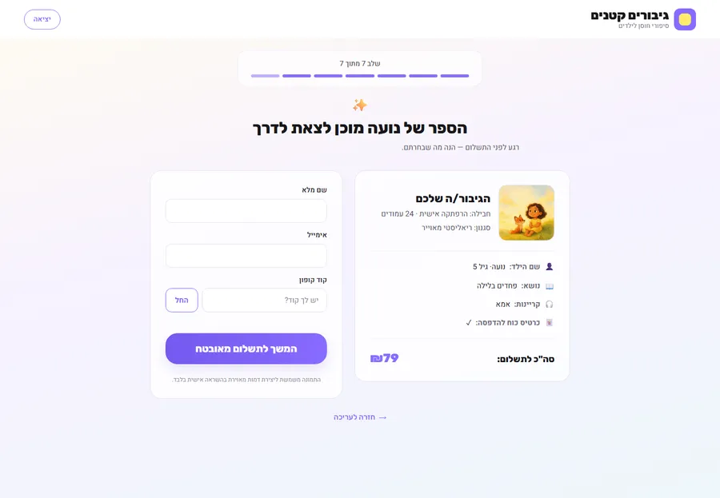
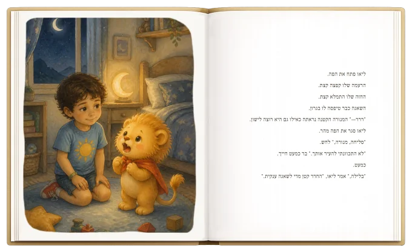
הספרייה של המשפחהארבעה רגעים שמגדירים את התחושה של SmallHeroes — כולם חיים כאן, בקטן.
הבעיה: במסך התשלום, כרטיס "מומלץ" נראה כמו "נבחר" — הורים לא היו בטוחים מה הם קונים.
הרעיון: להפריד סמנטיקה: המלצה = תג. בחירה = טבעת, רקע וסימן ✓ על הכפתור.
הבעיה: שדה חסר גרם לרעידה של 0.4 שניות — ונעלם. קוראי מסך לא שמעו כלום.
הרעיון: שגיאה היא משפט אנושי שנשאר עד שמתקנים: טקסט גלוי, aria-invalid, role=alert — ונמחק ברגע שמתחילים להקליד.
הבעיה: סכום שמופיע רק בסוף מרגיש כמו מלכודת; סכום שלא מתעדכן שובר אמון.
הרעיון: הסה"כ חי בבר הפעולות, מתעדכן עם כל בחירה בספרות טבלריות — בלי קפיצות רוחב.
הבעיה: "ספר בהתאמה אישית" היא הבטחה מופשטת עד שרואים אותה.
הרעיון: השם, האתגר והכיוון משתקפים מיידית בכריכה חיה — הכותרת, הדמות והאורך מתעדכנים תוך כדי הזנה.
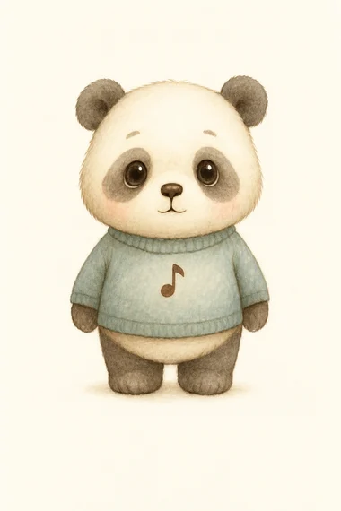
איך היסודות מתחברים למסך שלם — שתי דוגמאות עם הערות מדודות.
אותם מסכים, אותו רוחב, אותם מצבים — רק המערכת השתנתה.
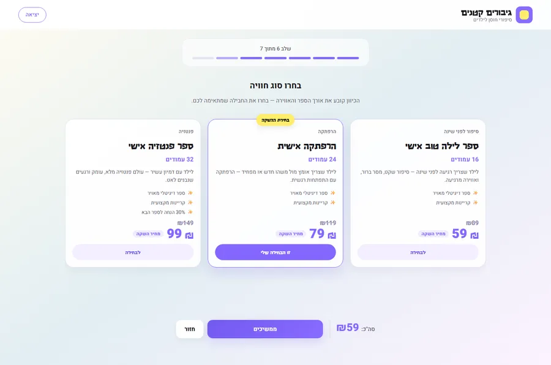
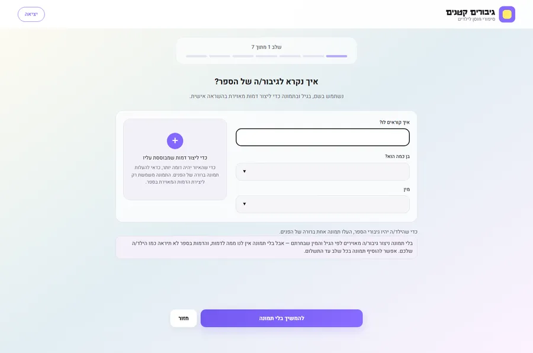
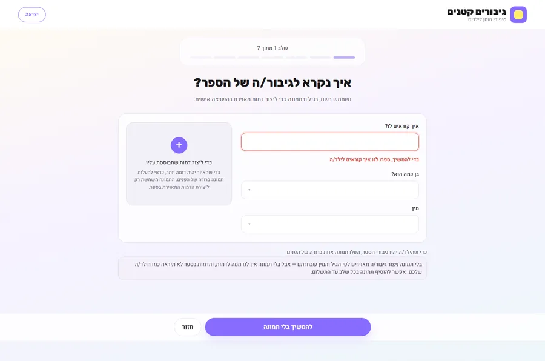
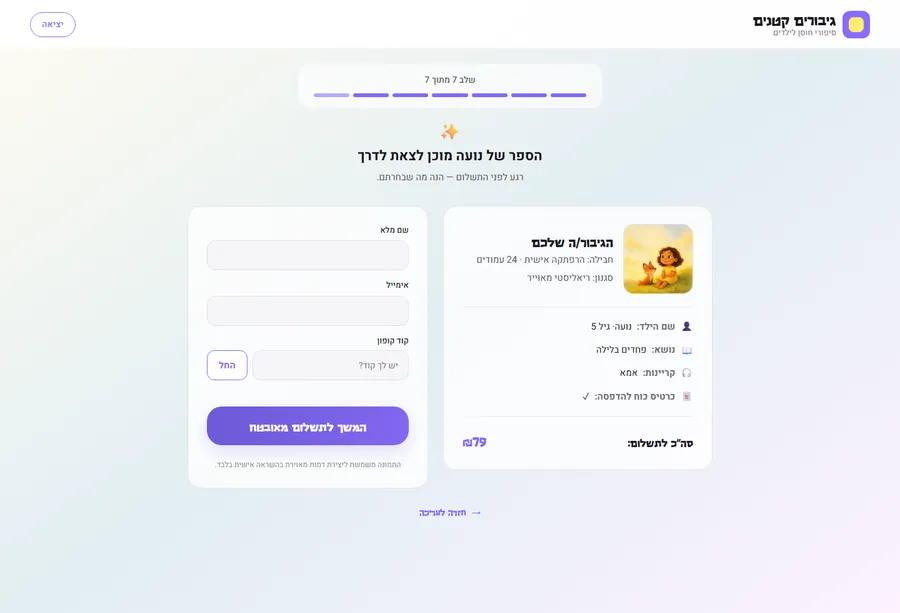
התמצית שמונעת סחף — מה כן ומה לא.
--interactive, לא "סגול"